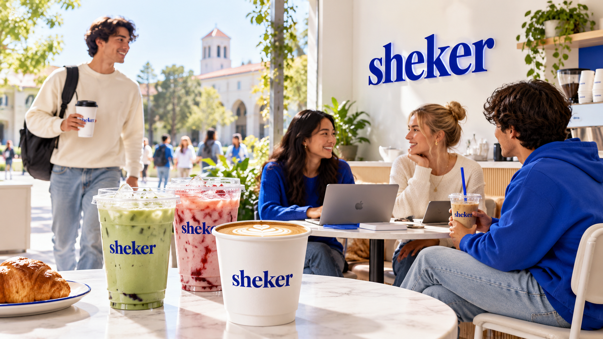

Our place
About Sheker
A coffee spot inside Astana IT University, created around quick service, bright drinks and a recognizable blue identity.
Coffee between classes.
Sheker is a convenient campus stop where students can meet friends, work on assignments or pick up a drink before the next class.
The website keeps the brand's blue color, white space and drink-focused visuals, while using a simple structure that is easy to understand and defend.

Fresh choice
Classic coffee and modern cold drinks in one menu.
Campus mood
A simple place for short breaks and student meetings.
Recognizable style
Bright royal blue, white backgrounds and colorful drinks.
Frequently asked questions
Click a question to see the answer.
Sheker is inside Astana IT University, so students and staff can grab a drink between classes without leaving campus.
Classic hot coffee, cold coffee, matcha, bubble tea, milkshakes, smoothies, lemonades and tea. The full list with prices is on the Menu page.
Classic coffee starts from 650 ₸ for an espresso. Most coffee drinks cost between 750 ₸ and 1150 ₸ depending on the size.
Yes. Many coffee and matcha drinks come in small and medium sizes. Both prices are shown in the menu.
Of course. Try our lemonades, fruit teas, smoothies, milkshakes or bubble tea if you want something without caffeine.
When you sign in, the website remembers your name and greets you on every page.